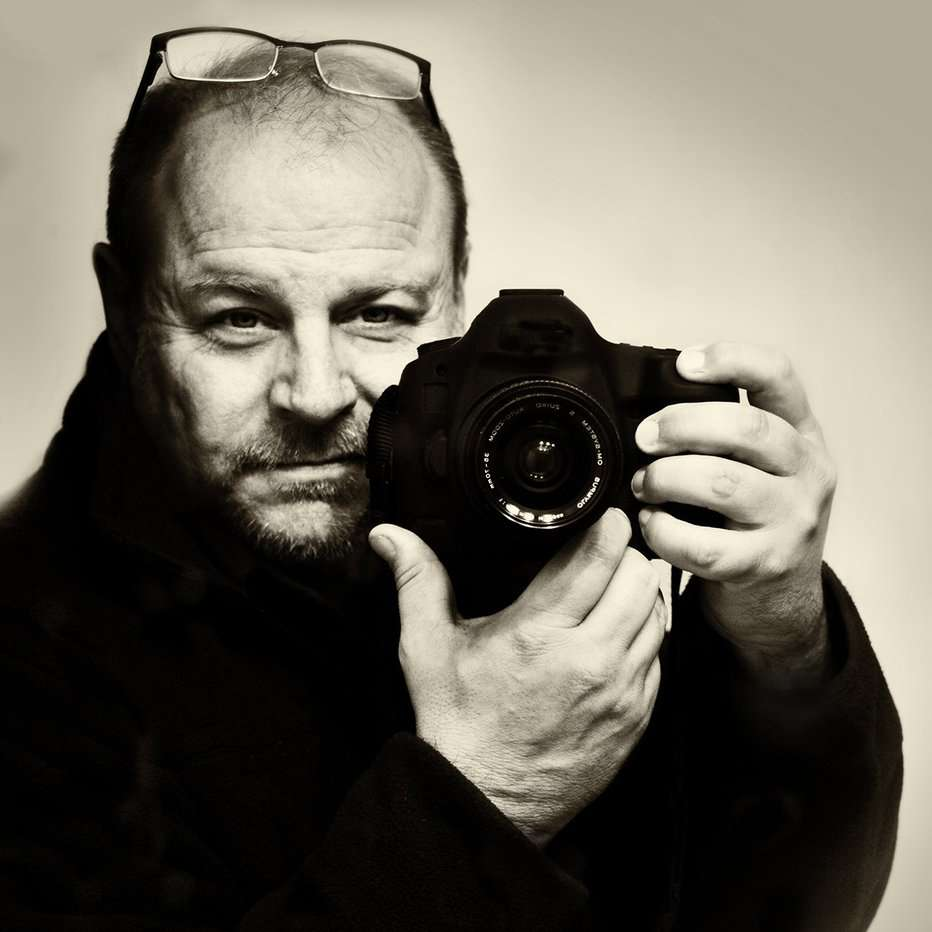

Keith Dotson

Keith Dotson is a contemporary photographer living in Nashville, Tennessee, who creates art for a global audience. He specialises in black
and white photography and his favourite subjects include landscapes, cityscapes and abstractions from nature.
With photography, Keith Dotson presents straight-forward black and white images, allowing the drama and mood of the subject to shine. He prefers
the look and atmosphere of soft light, often shooting on overcast or stormy days that keep other photographers at home.
Keith's photographs appeared in two major motion pictures including the 2016 movie Why Him? and the 2018 action film Peppermint, starring Jennifer
Garner. His photographs had multi-season recurring roles on the sets of Grey's Anatomy and Melissa and Joey, and have appeared in other TV shows
like Modern Family, Gossip Girl, The Mindy Project, and Tyler Perry's Sistas.
His Work (Dead flowers)

Here is a link to his other work: https://keithdotson.com